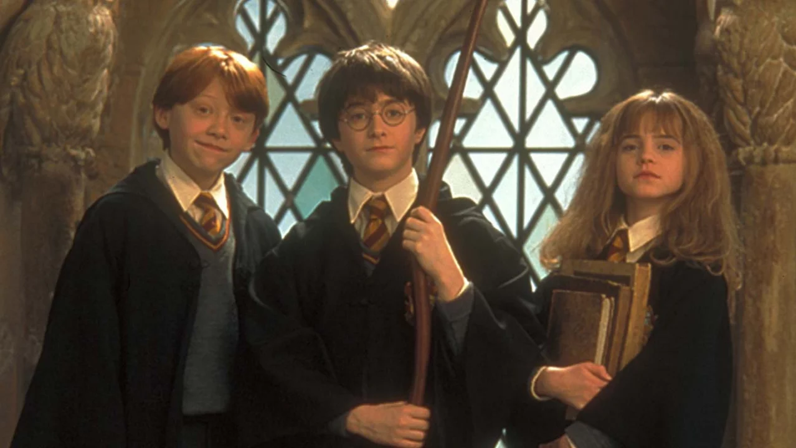
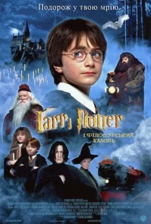
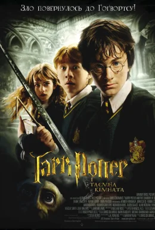
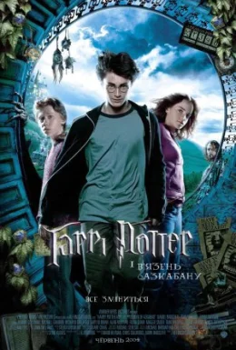
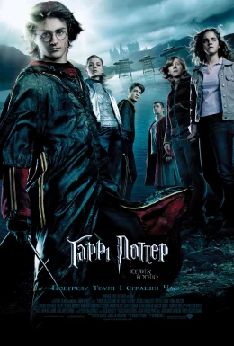
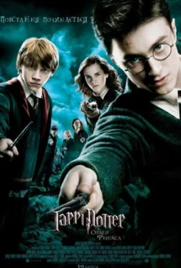
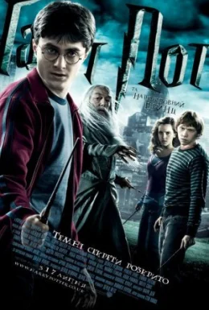
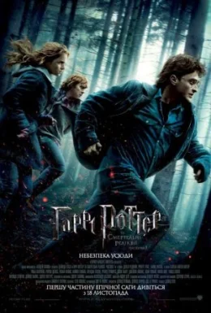
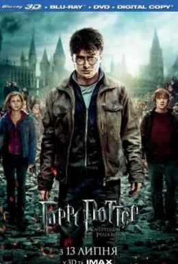

Harry Potter Series

Harry Potter Series - a series of films based on the books about Harry Potter by the English writer J.K. Rowling. The series was released by Warner Bros. and consists of ten films in the fantasy genre, including the main series - starting with «Harry Potter and the Philosopher's Stone» (2001) and ending with «Harry Potter and the Deathly Hallows: Part 2» (2011) - as well as the spin-off «Fantastic Beasts and Where to Find Them» (2016) and its sequel «Fantastic Beasts: The Crimes of Grindelwald» (2018). In 2022, the release of a trilogy «Fantastic Beasts» is expected.
All Parts of "Harry Potter":
- Harry Potter and the Philosopher's Stone
- Harry Potter and the Chamber of Secrets
- Harry Potter and the Prisoner of Azkaban
- Harry Potter and the Goblet of Fire
- Harry Potter and the Order of the Phoenix
- Harry Potter and the Half-Blood Prince
- Harry Potter and the Deathly Hallows: Part 1
- Harry Potter and the Deathly Hallows: Part 2
Harry Potter and the Philosopher's Stone

Harry Potter lives a difficult life, constantly tormented by his cruel uncle and aunt, who treat him with disdain. On his tenth birthday, Harry discovers he has magical abilities. He is sent to the wizarding school Hogwarts, where he finds many friends and adventures.
In the wizarding world, Harry becomes interested in Quidditch, a popular sport in the magical community. The movie "Harry Potter and the Philosopher's Stone" can be watched in high quality for free.
Harry Potter and the Chamber of Secrets

Young wizard Harry Potter returns to Hogwarts for his second year. His adventures begin even before reaching the school. Dobby, a house-elf, blocks the barrier to the train station, and Harry and his friends fail to board the train. They must find a new way to reach Hogwarts...
It is a wonderful moment when Harry realizes he has magical powers. The boy enters a magical world that has always been nearby, just like the ordinary world.
In the new world, Harry enrolls in the wizarding school Hogwarts, where he finds many friends and adventures. While attending the school, Harry becomes interested in the popular sport called Quidditch and enthusiastically participates in it...
Harry Potter and the Chamber of Secrets
Young wizard Harry Potter begins his second year at Hogwarts School of Witchcraft and Wizardry. His adventures start before he even reaches the school. Dobby, the house-elf, blocks the entrance to Platform Nine and Three-Quarters, preventing Harry and his friends from boarding the train. They must find another way to get to Hogwarts. What awaits them there?
Harry discovers Tom Riddle's diary and learns important details about Lord Voldemort's childhood.
The heroes face a new threat—the Basilisk, a giant serpent that hunts Muggle-born students. Harry hears the Basilisk's voice and realizes that he can speak Parseltongue. Using his newly discovered ability, he opens the Chamber of Secrets to rescue Ron Weasley's sister, Ginny. Tom Riddle drains Ginny's life force to transform from a memory into a real wizard. Controlling the Basilisk, he tries to kill Harry and Ron. Harry pulls the Sword of Gryffindor from the Sorting Hat and defeats the Basilisk, but not before it bites him with its deadly venom.
Will Harry survive? What happened to Hermione? And will Ginny live? You'll find the answers by watching Harry Potter and the Chamber of Secrets.
Harry Potter and the Prisoner of Azkaban

The wizarding world is in danger! Sirius Black has escaped from Azkaban, the most secure wizarding prison. He is believed to have betrayed Harry Potter's parents by revealing their location to Lord Voldemort and to have murdered his friend Peter Pettigrew. Sirius is the only wizard ever to escape from Azkaban while remaining sane. Intriguing, isn't it? And what if you also learned that Sirius Black is Harry's godfather?
Harry was deliberately kept in the dark about this information because everyone expected Sirius to hunt him down. Instead, Harry begins receiving mysterious gifts from an unknown sender. Despite the protection surrounding him, Harry is determined to meet his godfather. He desperately wants answers. How could his father's best friend become a traitor? Why did he kill Pettigrew?
But Sirius isn't actually hunting Harry. So who is he searching for? Why was escaping Azkaban so important to him? Is Sirius Black truly a traitor? Watch Harry Potter and the Prisoner of Azkaban to find out.
Harry Potter and the Goblet of Fire

Harry Potter and the Goblet of Fire is the fourth film in the Harry Potter series. Another school year at Hogwarts has come to an end for Harry and his friends. After returning from the summer holidays for his fourth year, Harry learns that the legendary Triwizard Tournament will be held at Hogwarts.
The champions are selected by an ancient magical artifact known as the Goblet of Fire. To Harry's surprise, his name is chosen even though he is underage and the other contestants are older and more experienced. Three young wizards must face dangerous challenges in their fight for victory. At the same time, Harry must remain vigilant, as Lord Voldemort grows stronger every day and is about to return.
Harry Potter and the Order of the Phoenix

After the events of the previous film, the dark wizard Lord Voldemort returns. Harry Potter begins his fifth year at Hogwarts, facing the greatest challenge of his life as he searches for a way to defeat the murderer of his parents once and for all.
However, most teachers and students refuse to believe that Voldemort has returned, pretending that everything is normal. Only Harry's closest friends and allies form the Order of the Phoenix to protect him and stand against the Dark Lord.
Meanwhile, Hogwarts introduces defensive magic lessons, but they soon prove to be ineffective. Harry, Hermione, and Ron decide to create their own secret group where students can truly learn how to defend themselves against the Dark Arts.
Harry Potter and the Half-Blood Prince

The entire wizarding world is now threatened by Lord Voldemort's growing power, and even Hogwarts is no longer a safe place. Believing that the final battle is approaching, Professor Dumbledore prepares Harry for what lies ahead.
Together, they search for the secret of Voldemort's immortality. To help uncover the truth, Dumbledore invites his old friend Professor Horace Slughorn, a brilliant Potions master, back to Hogwarts. Harry is asked to gain Slughorn's trust and obtain crucial information about the Horcruxes.
At the same time, romance begins to blossom among the students. Harry develops feelings for Ginny Weasley, while Lavender Brown falls deeply in love with Ron. Despite these happy moments, a terrible tragedy is approaching, and Hogwarts will never be the same again.
Harry Potter and the Deathly Hallows: Part 1

Hogwarts is no longer a place for Harry, Hermione, and Ron. They have become the wizarding world's most wanted fugitives. Constantly moving from place to place and hiding in a small tent, they search for the Horcruxes while trying to understand the mysterious legacy Dumbledore left behind.
With the Ministry of Magic fallen and Hogwarts under enemy control, they have nowhere to turn for help. Defeating Voldemort seems almost impossible, but the friends refuse to give up.
Their search leads them to Godric's Hollow, where Harry's parents died. There they meet an old acquaintance of Dumbledore, hoping to find the Sword of Gryffindor, the only weapon capable of destroying the Horcruxes.
Meanwhile, Voldemort believes he has conquered the wizarding world, spreading fear everywhere. All hope now rests on one young wizard whose destiny is to save the world. Will Harry succeed? Can good triumph over evil? Watch Harry Potter and the Deathly Hallows: Part 1 to find out.
Harry Potter and the Deathly Hallows: Part 2

Harry continues his search for the remaining Horcruxes. Even when all hope seems lost, his love for his friends and determination keep him moving forward. He never gives up, even when everyone else believes that miracles no longer exist.
As Harry and his friends uncover more about Dumbledore's past, Voldemort searches for the Elder Wand, the most powerful wand in existence. In his pursuit of ultimate power, he overlooks the fate of the Horcruxes that contain fragments of his soul.
After destroying all the Horcruxes, Harry finally discovers the truth about himself. Long-hidden secrets are revealed, and everything begins to make sense. Why can Harry speak Parseltongue? Will he survive the final battle? Can the wizarding world be saved? What is Professor Snape's true secret? And how many beloved characters will lose their lives? The answers await in the epic conclusion, Harry Potter and the Deathly Hallows: Part 2.